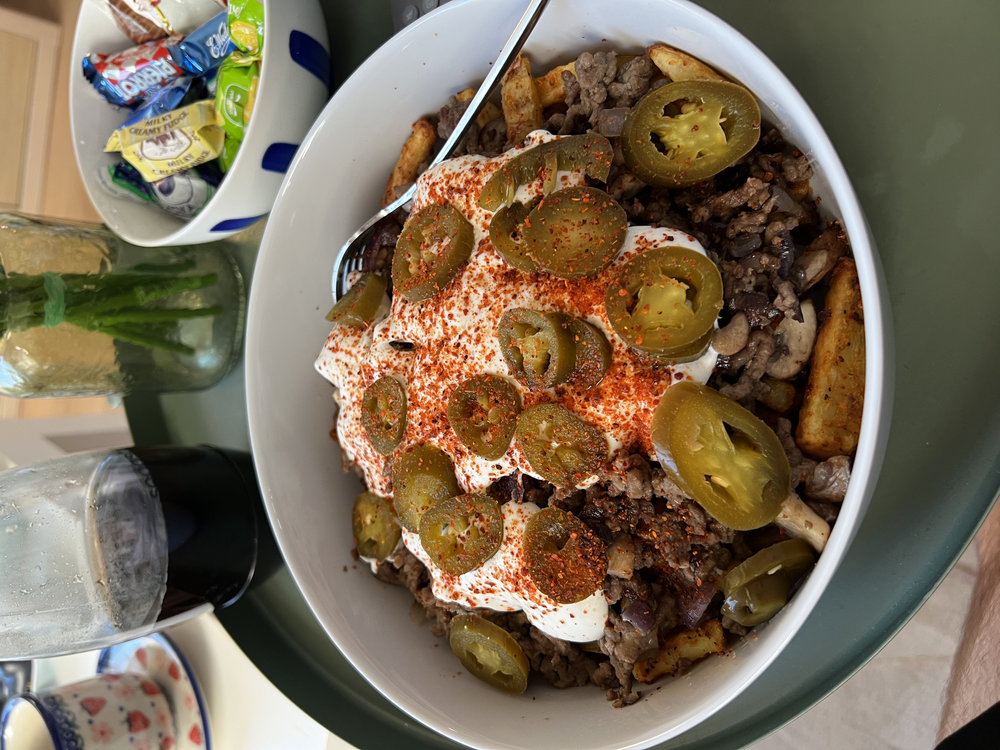

Back to homepage
Meat and Fries

This delicious bowl of fries and meat will satisfy you, under 1000 kcal.
This recipe is simple to make. It involves making your own fries thus requires and airfryer
Ingredients
- 500g Potatoes
- 250g Lean ground beef
- 50g Skyr
- 25g Philadelphia extra protein
- Half an onion
- 20g Jalapenos
- Cooking Spray
- Various Spices
Cooking Instructions
- Cut potatoes into batons, soak them in cold water for 15 minutes. Start boiling salted water in a potatoes
- Boil the potatoes for 5 minutes, then take out and dry on a wire drying rack.
- Let the potatoes dry out, and then toss them in spices.
- Place them in the airfryer basket, and start the airfryer at 180c for 40 minutes.
- After 20 minutes, spray the fries with oil.
- While the fries are finishing, cut onion and fry with ground beef.
- Mix skyr and Philadelphia in a separate container.
- Put everything in a bowl once done.